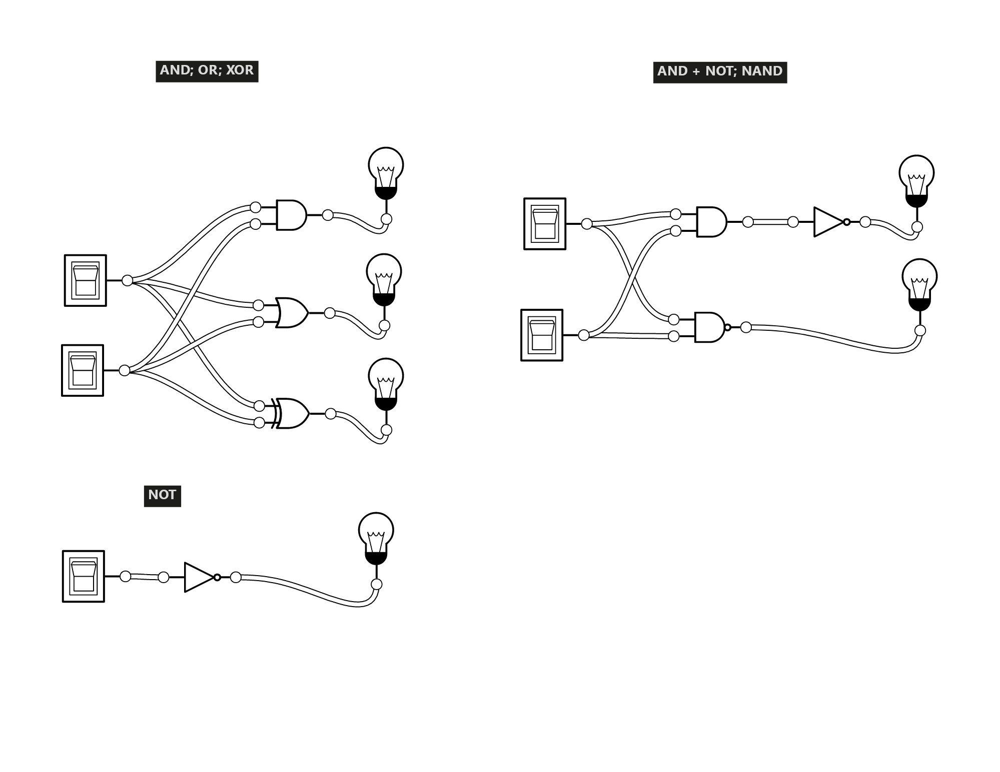
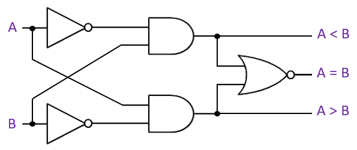

Logic Gates
For an excellent logic gate sandbox, see:
Logic.ly.
Foundations
-
Computers recognize only two states, based on the presence or absence of
an electrical signal.
- High voltage = 1 = true
- Low voltage = 0 = false
-
A logic gate is a device that performs a logical
operation on one or more binary inputs and produces a single binary
output.
-
A circut is a collection of logic gates that work
together to perform a specific task.
Basic Gates
The logical connectives that we've learned so far have corresponding
logic gates.
The truth table for each gate matches the truth table for the
corresponding logical connective.
Demo:
Logic.ly

Operations with Gates
Demo:
One bit magnitude comparator

Using A = 1, B = 1 as an example, let’s figure out the inputs to the gates
that lead to each outcome:
What is the logic circuit for A < B?
What is the logic circuit for A > B?
What is the logic circuit for A = B?
- ¬( (¬A ∧ B) ∨ (A ∧ ¬B) )
- A ∨ ¬B ∧ ¬A ∨ B
- A ∨ (¬B ∧ ¬A) ∨ B
- 1 ∨ (0 ∧ 0) ∨ 1
- 1 ∨ 0 ∨ 1 = True